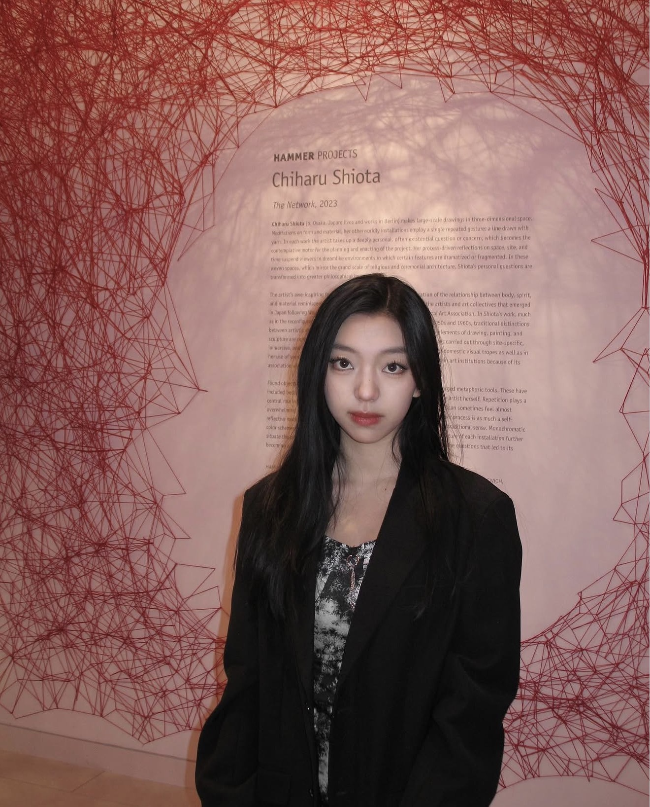

Marketing · Events · Partnerships
Xintong (Kitty) Han
UC San Diego · Business Economics. I like building things people actually show up for—campaigns, communities, and live moments—without losing the spreadsheet side of the story.
↓ Tap the tiles below—each one opens a different side of what I do.
$50K+
Sponsorships secured
800+
Lunar New Year Festival guests
40K+
Social followers
100+
Officers led
Interactive
Pick what you want to know
No endless scroll—open a window into one topic at a time.


Contact
Let’s work together
Internships, collabs, events, or partnerships—send a note.
- Email x8han@ucsd.edu
- Phone +1 (626) 632-7408
- Résumé Download PDF